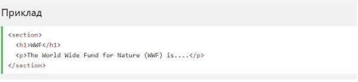

HTML5 Семантичні елементи
Семантичний елемент чітко описує його значення як для браузера, так і для розробника. Приклади не семантичних елементів: < div > і < span >- нічого не говорить про його вміст. Приклади семантичних елементів: < form >, < table >і < article >- чітко визначає його зміст.
Підтримка браузерів
Семантичні елементи HTML5 підтримуються у всіх сучасних браузерах. Крім того, ви можете "навчити" старих браузерів, як обробляти "невідомі елементи". Прочитайте про це в підтримці браузера HTML5.
Нові семантичні елементи в HTML5
HTML5 пропонує нові семантичні елементи для визначення різних частин веб-сторінки:
- < section >
- < article >
- < header >
- < footer >
HTML5 < section > елемент
Елемент < section >визначає розділ в документі. Згідно з документацією в3к'с HTML5: "розділ представляє собою тематичну угруповання контенту, зазвичай з заголовком". Домашня сторінка зазвичай може бути розділена на розділи для ознайомлення, змісту і контактної інформації.
HTML5 < article > елемент
Елемент < article >визначає незалежний, автономний вміст. Стаття повинна мати сенс самостійно, і вона повинна мати можливість читати його незалежно від іншої частини веб-сайту. Приклади того, де можна використовувати елемент < article >:
- Повідомлення на форумі
- блозі
- Газетна стаття
HTML5 < header > елемент
Елемент < header >задає заголовок для документа або розділу. Елемент < header >повинен використовуватися в якості контейнера для вступного змісту. В одному документі може бути кілька елементів < header >. У наступному прикладі визначається заголовок для статті:
HTML5 < footer > елемент
Елемент < footer >вказує нижній колонтитул для документа або розділу. Нижній колонтитул зазвичай містить автора документа, інформацію про авторське право, посилання на умови використання, контактні дані і т.д. В одному документі може бути кілька елементів < footer >.